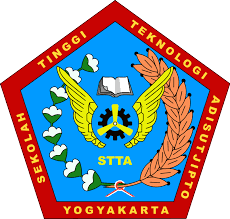
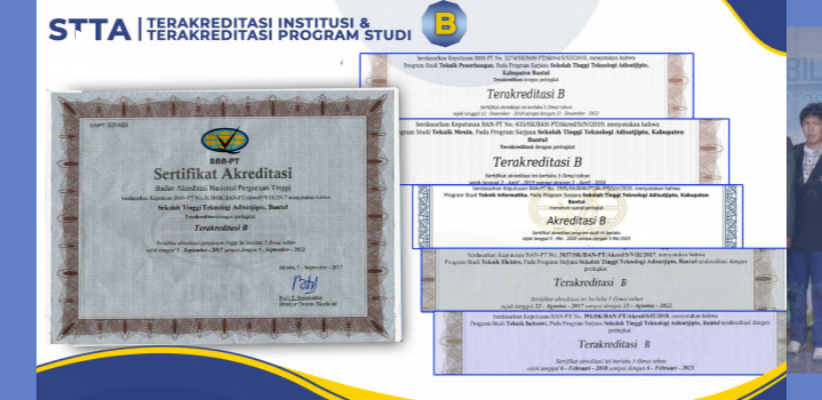

Pendaftaran |
Berita |
Kontak Kami |
FAQ |
English

SEKOLAH TINGGI TEKLNOLOGI
ADISUTJIPTO
Beranda
Portal
E-journing
E-journal
Senatik
Portal Mahasiswa
Alumni
Perpustakaan
Web Blog
Dokumen
Profil
Sejarah
Visi & Misi
Pendidikan
Fasilitas
Kerjasama
Galeri
Video
Lokasi
Departemen
D3 Aeronautika
Teknik Elektro
Teknik Dirgantara
Informatika
Teknik Mesin
Teknik Industri
Organisasi
Yayasan
Rektorat
Staf Pengajar
P3M
UPT Wirausaha
Senat Mahasiswa
BEM
HMJ
UKM
Akademik
SPMB
KRS online
Cetak KRS online
Cetak KRS Remidi
Situs E-learning

Akreditasi Institusi & Prodi STT Adisutjipto Yogyakarta